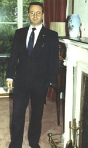
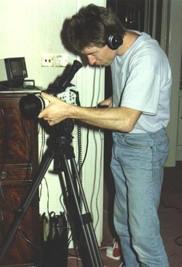
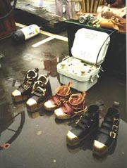
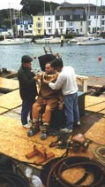

|
|

HDS BACKGROUND - JOHN BEVANThe inspiration for the formation of the Historical Diving Society was the end of the use of standard diving techniques in Portsmouth Naval Dockyard. As a result the Historical Diving Society was set up in 1990, by some 30 enthusiasts, to study, preserve and promote our diving heritage.
Since then the membership has grown steadily and now includes individuals and organisations from all over the world. The Society now produces a regular newsletter and arranges special conferences, visits and exhibitions.
HDS STONEY COVE RALLY - JOHN BEVAN
One of the most popular events in the Society’s calendar is the annual historical diving rally: the first of which was held at Stoney Cove in September 1991.
Seeing these enthusiasts enjoying their unusual pursuit, you may ask the question: "Why do they do it?"
Firstly, I think it is because they feel its important that we should conserve our diving heritage which is already rapidly disappearing from sight and memory.
And, second, the sheer enjoyment of the unique and fascinating experience of diving in the equipment. Through this activity we can better appreciate the problems faced by our diving forebears and how they were able to overcome them.
HARVEY PORRETT
"The divers are there to guide your feet down the steps." ("Yep"). "You go down to the bottom of the ladder. We will then tell you through the comm set how far out you can go and you can literally walk an arc on that length of hose. Alright?" ("Yep").
"Can you tell him to clear his ears, swallowing. Clear your ears by swallowing, otherwise it’s going to hurt. Right can somebody give him a hand over the side. That’s it mate. This is the hard bit. Don’t tell him this is the hard bit, climbing. No, up, up."

JOHN BEVANThese are the sort of people who enjoy meeting technical challenges and working as part of a close-knit team.
DIVER & TEAM
("Hello Chris!") "Bloody hat fell over me eye." ("You alright son?") "Couldn’t see anything me hat went over me eye."
HDS WEYMOUTH RALLY - JOHN BEVAN
This year the Historical Diving Society is planning on holding a very special rally at Weymouth in Dorset.
1992
This event will represent the largest gathering of historical diving equipment ever. We hope therefore that this event will encourage divers to refurbish ancient diving equipment and maintain it in full working condition.
NICK BAKER
We had to spend some time constructing special supports for the ladders
Rally Co-ordinator
and also we had to build some divers benches because obviously the equipment’s very heavy and it’s important to have the correct size of bench for these heavy divers to sit on while they’re being dressed and getting undressed.
DIVER & HARVEY PORRETT
("Hello.") "No, give it an ‘over’ afterwards: these are comm sets. Pam can you hear, over." ("Yes.") "Right, Mary had a little lamb." ("Yes.") "Yes I can hear you Pam. Thank you dear." ("Hello.") "Don’t forget the over at the end of the chat." ("Over.")
NICK BAKER
The main problem with organising an event like this is that the people involved in it are individuals. They’re quite capable of organising themselves and so the problem is to gather a group of individuals who can all quite happily do their own thing into one place and actually get them to do things as you want them to.
DIVER
It feels quite heavy here on the chest and that. ("Yes.") It’s quite restricting and obviously the feet are really heavy, but that’s nothing yet because the weights haven’t gone on the front and back yet, so that’s when the fun and games start! I’ll probably need some help to get to the ladder, but should be okay in the water: that’s the main thing.

HARVEY PORRETTThe water’s quite opaque this time of the year anyway. We had some visibility to the cover divers to the end of the ladder, which was at around 10 or 12 feet. When the divers dropped off the ladder, down into the harbour mud, it was black. It’s all down then to correcting your buoyancy with the valve on the helmet, that’s your sole control, and you float yourself out the mud and hope to do the moonwalk across the bottom.
DIVER
It’s very silty down there and it’s very difficult to walk around. The visibility is about a metre if one is lucky. It’s quite good fun, it’s very good fun.
DIVER
Dropped off the bottom of the ladder, there’s about four or five foot drop. The trouble is it’s so muddy down there I think I went into the ground about a foot and then you’ve got to get these boots out, you know?
It’s good fun. It’s good fun!
DIVER
There’s a radio box up here which runs down an armour-plated cable to the back of the hat and there’s a two way transducer in the helmet. All I’ve got to do is talk and I can receive. I think it’s important to have communications, otherwise one has to rely on rope signals and they can get misinterpreted, misinterpreted.
NICK BAKER
We’ve actually managed to get about seven, I think eight working sets here today, and obviously it’s quite an achievement to have this sort of apparatus in working condition in such numbers in one place at one time.
JOHN BEVAN
Various members have brought along their personal collections of old diving equipment for display and in some cases actual use in the water. The main items are diving dresses up to 20 years old, helmets (some as much as 70 years old) and pumps, produced by various manufacturers in Britain and America.
Ancillary equipment includes knives, torches, lights, boots and a collection of more recent demand valves as used by scuba divers.
This particular meeting has been hosted by the Weymouth Deep Sea Adventure Centre, founded by Brian Cooper.
DEEP SEA ADVENTURE CENTRES - BRIAN COOPER
The idea came from my work in the diving industry and the fact
Professional Diver
that the public, I know, are fascinated by underwater discovery, shipwrecks and techniques used to recover oil and things like that from the sea bed. It starts in the 17th century and as you progress through the floors you eventually reach the ground floor where we’re amongst 20th century equipment like this ROV, remotely operated vehicle, called ‘High Sub’.

HDS WEYMOUTH RALLY - ERIC WALKERThis morning I’ve been helping out in the Dive Centre putting divers in the tank and this afternoon I’m going to get dressed up and jump off the cassoon and do me party pieces like I did last year.
|
|